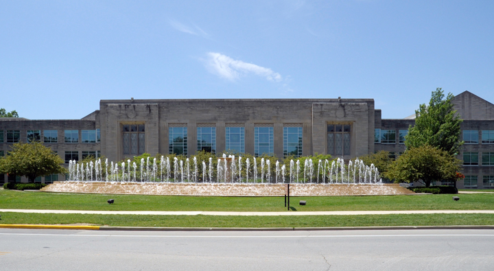
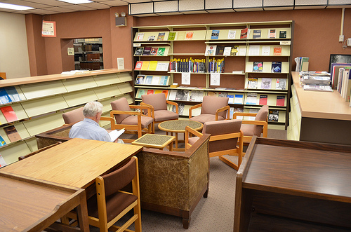

The William and Gayle Cook Music Library
The William and Gayle Cook Music Library at Indiana University, recognized as one of the largest academic music libraries in the world, serves the world-renowned Jacobs School of Music and the Bloomington Campus of Indiana University. The collection is comprised of over 700,000 catalogued items on 56,733 linear-feet of shelves.The staff includes five librarians, two professional staff, six support staff, and approximately forty-five student assistants. It occupies a four-floor, 55,000 square-foot facility in a wing of the Bess Meshulam Simon Music Library and Recital Center, dedicated in November 1995. Check out more information over here

The Fine arts library
The Fine Arts Library houses IUB's books and journals in the fields of the visual arts, art history, architecture, fashion, design and related disciplines. Our collection is comprised of over 130,000 volumes, over 3,000 periodicals, a Reference Collection comprising dictionaries, encyclopedias, indexes, bibliographies and other research-rich materials, MFA thesis files from the School of Fine Arts, and a non-circulating collection of rare arts-related books, including over 2000 artists' books.
. Visit their website here.

Education Library
Our mission is to support and strengthen teaching, learning, and research by providing the collections, services, and environments that lead to intellectual discovery.. Visit their website here.
Herman B Wells
On the Bloomington campus, the Herman B Wells Library, with its double towers of Indiana limestone, is the visual center of the multi-library system and primarily supports the disciplines of the humanities and social sciences. More than 4.6 million volumes are contained in this building. Especially noteworthy are the collections that support IU’s international and area studies, including interdisciplinary research collections developed in the areas of African Studies, Russian and East European Studies, Uralic and Altaic Studies, East Asian Studies, and West European Studies.
For more information check over here

Chemistry Library
The Chemistry Library exists to support the research and teaching of the IUB Chemistry Department and Molecular and Cellular Biochemistry Department. We provide information resources and services to the faculty, students and staff in this department as well as the entire Indiana University community. The library is open to the public and loan privileges are granted to residents of Indiana.
For more information

Swain Hall Library
Swain Hall library serves the needs of the Physics, Astronomy, Mathematics, and Statistics departments, and the School of Informatics and Computing.
For more information
GLBT Library
The GLBT Library contains materials pertaining to asexual, bisexual, gay, intersex, lesbian, transgender, and queer issues. These resources include books, videos, CDs, and periodicals. Our collection is a great resource for both research and entertainment.
They provide lending services to the entire community. Anyone can become a patron of the GLBT Library; all you need to register with us is a photo ID.
"We’re here to help you find what you’re looking for and answer any questions you might have, whether you’re doing research for a paper or just want to find a good book or movie". Check out their website over here.
Check out more libraries@IU over here